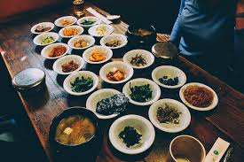
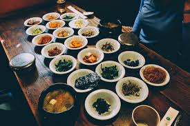

There are many Korean restaurants in the capital city of Seoul, but, many of them should be on the top list for tourist wanting to have a genuine South Korean meal. There are even books about the best Korean restaurants in all of South Korea. Author Jun Kyung-woo wrote a best selling book called, "Dining in Seoul."
"The first question is: how do you define Korean food?" says Jun. "Is it the ingredients? Is it Korean because it exists in Korea? Is it what Korean people actually eat?"
And for the many "foodies" out there the way that Korean flavors and spices combine. Many famous and traditional dishes will have your mouth watering. And Korean meals traditional come in courses so don't think you're waking out without a full stomach. Korean cuisine is the customary cooking traditions and practices of the culinary arts of Korea. Korean cuisine has evolved through centuries of social and political change.
Let's get start:
.jpg)
.jpg) 
By many people this restaurant is one of the best places to eat if you just happen to stop by Jongno District in Seoul. Hanjeongsik is a very lavish and luxurious type of Korean cuisine. Hanjeongsik is a very tradional type of Korean cuisine, which is why it is very well known as luxurious cuisine. Song Jook Heon is mainly known for their Hanjeongsik cuisines. And depending on the season they offer different cuisines.